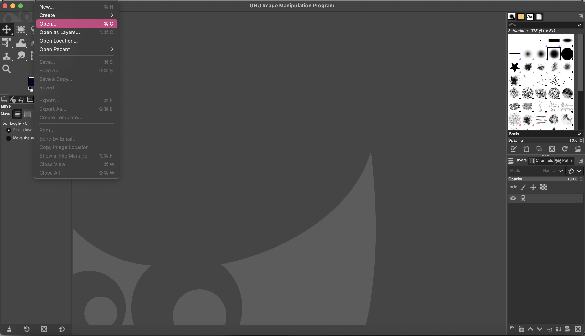
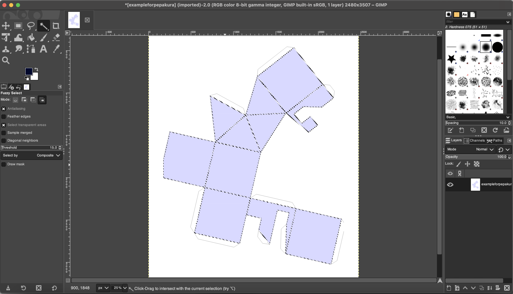
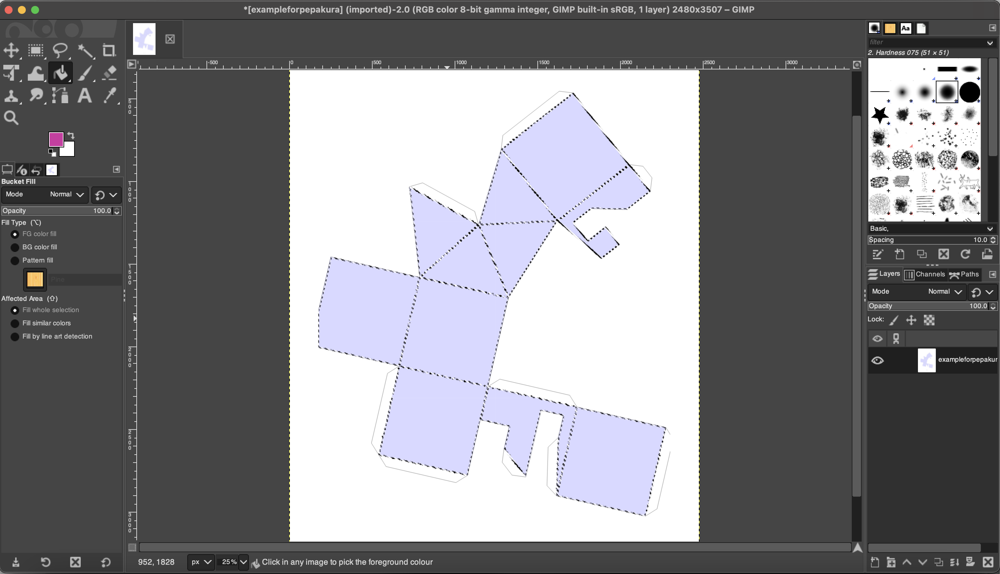
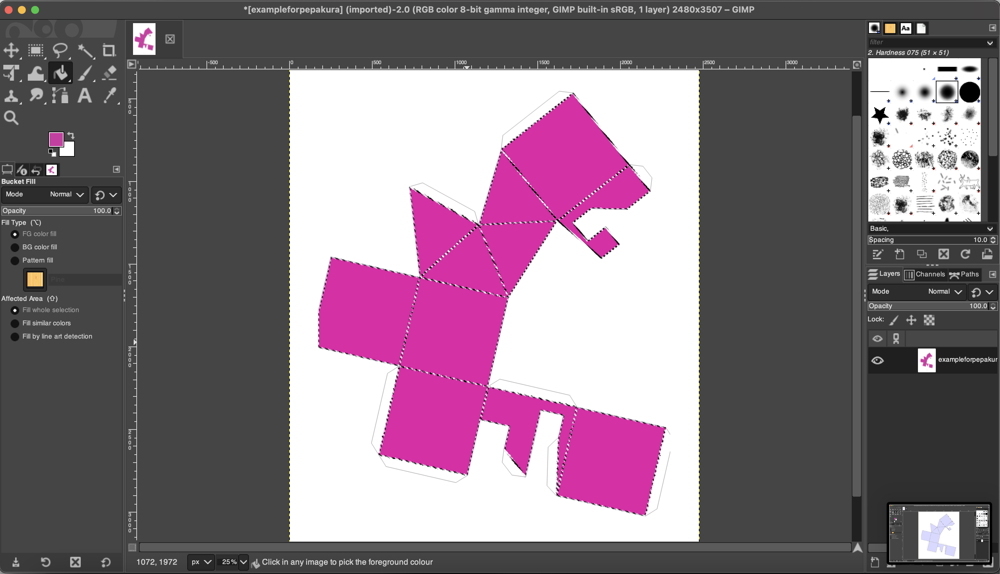
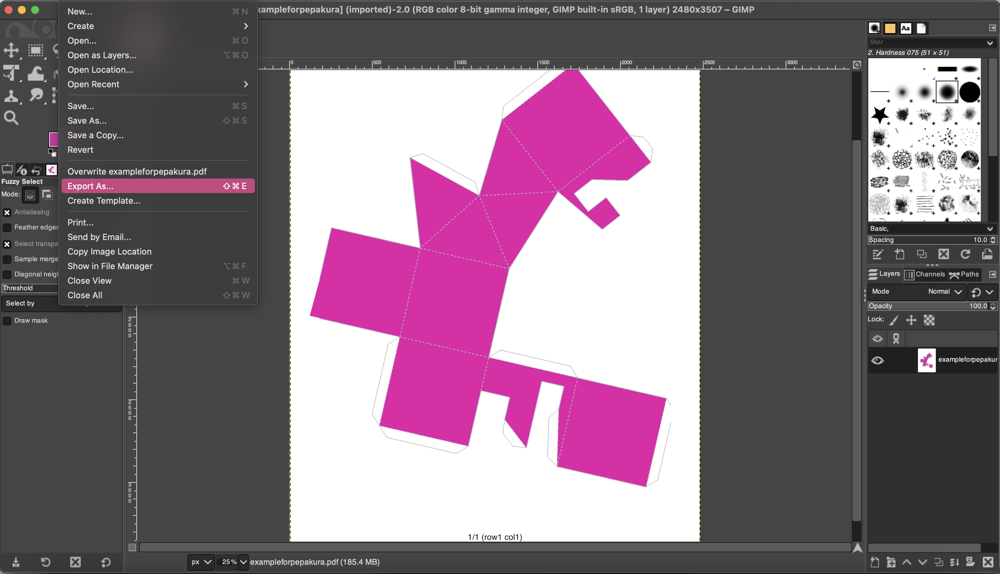

DECORATE IN GIMP
This step is optional. Ff you're happy with your template as is, feel free to skip ahead to printing. But if you'd like to decorate it digitally so it comes out of the printer looking polished and ready, here’s how you can use GIMP to do it.
- Open Your Template in GIMP
- Open GIMP, go to File > Open, and select your PDF template. 
- Select the Area to Decorate
- Use the magic wand tool to select the blue area in the image. The magic wand tool looks like this: 
- Apply Your Colors
- Choose your desired color with the color picker, then select the paint bucket tool. 
- Click on the selected area to apply the color. For example, I chose a vibrant pink, and here’s how it looks: 
- Export Your Decorated Template
- Once you’re happy with your design, go to File > Export As to save your decorated template. 
Now your template is decorated and ready for printing!